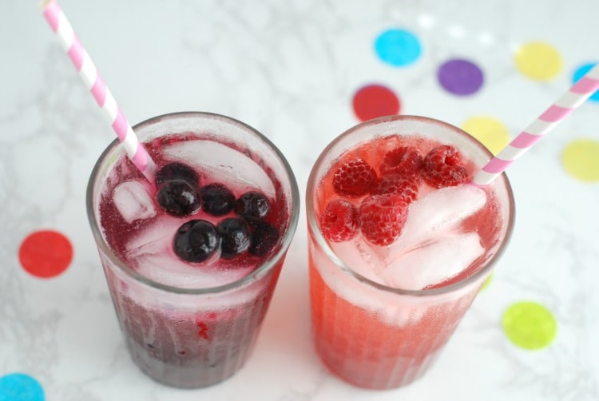

Fruit Soda
Prep Time: 10min
Yield: 4
Ingredients
Directions
- Process fruit in a food processor until smooth.Strain through a fine mesh strainer over a abowl,pressing with the back of a aspoon.Discard solids.(You should have about 1 cup juice.)
- Combine 2 tablespoons fruit juice with 1 to 2 tablespoons Simple Syrup.Depending on desired sweetness level.Top with 8 ounces club soda